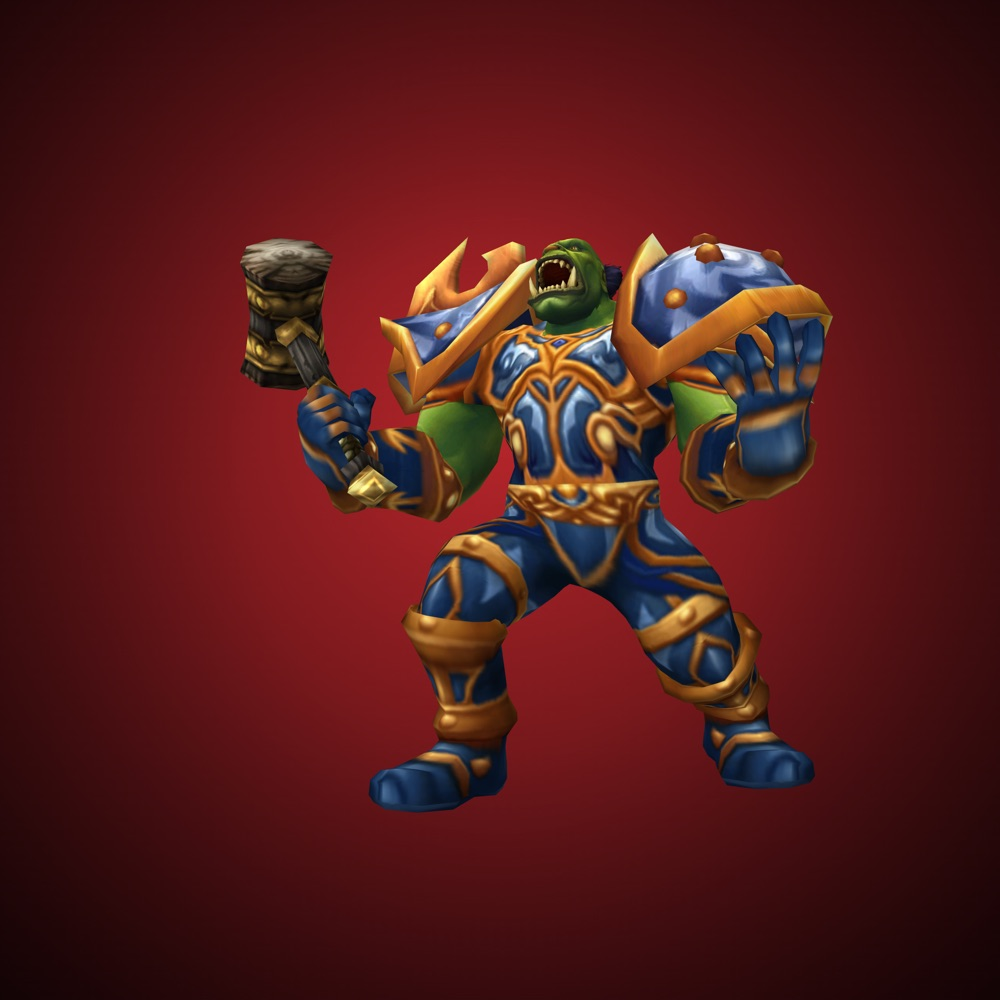
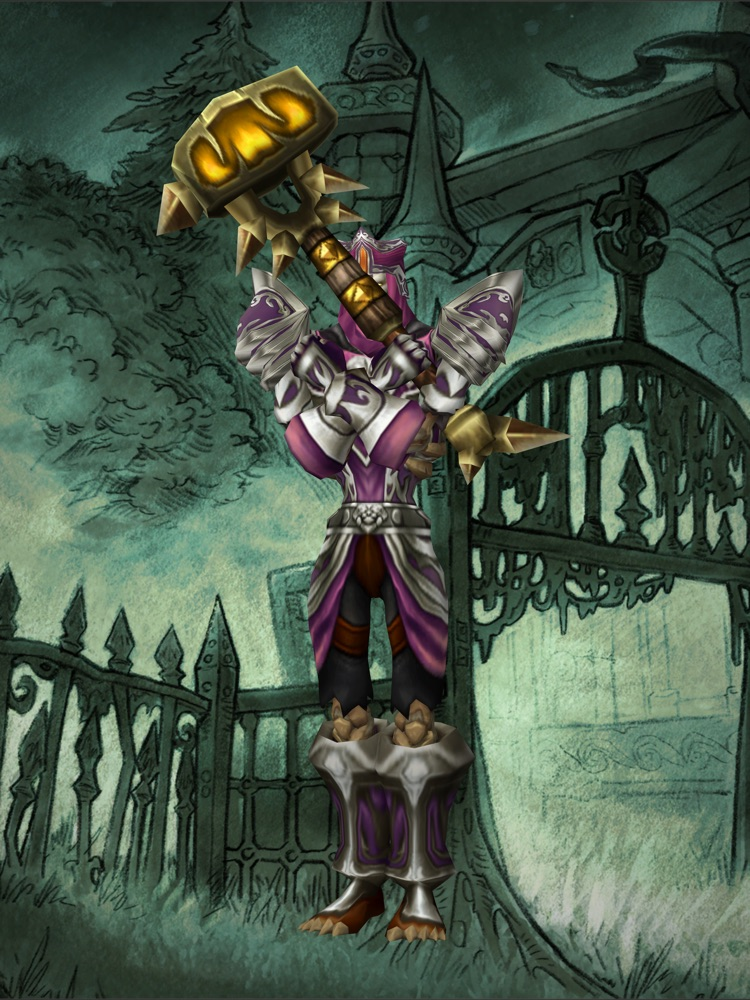
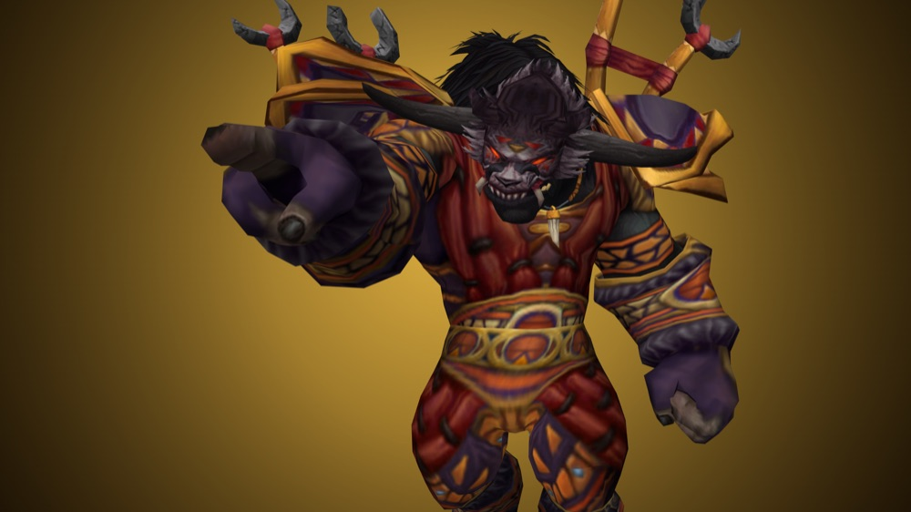
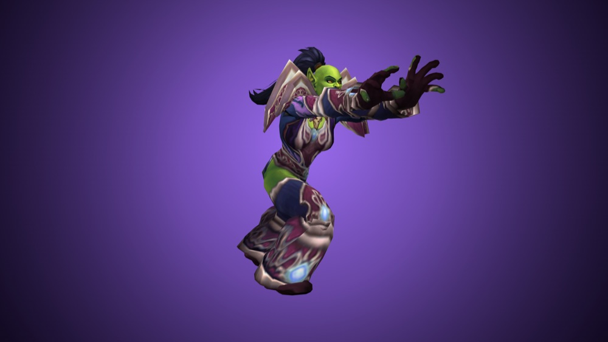
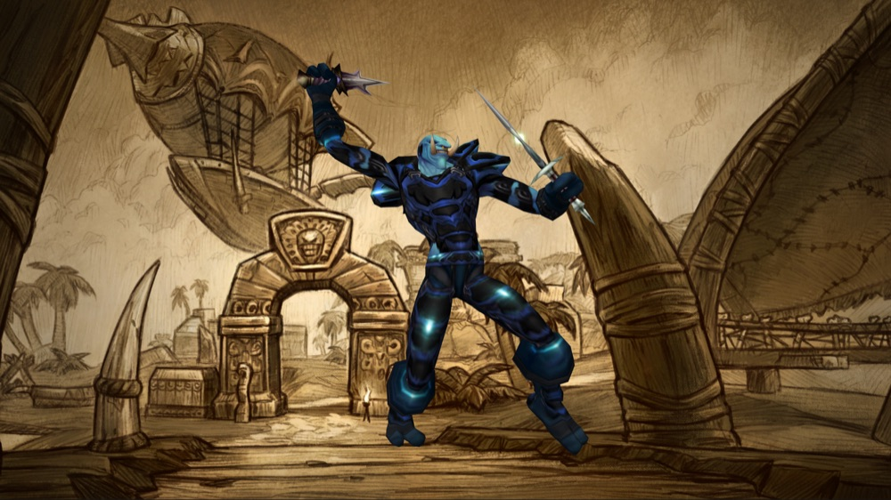
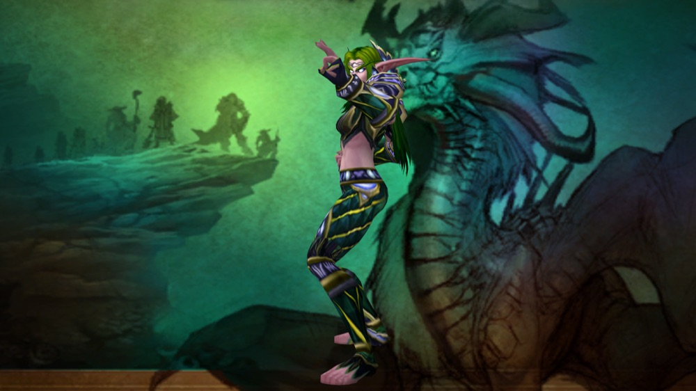
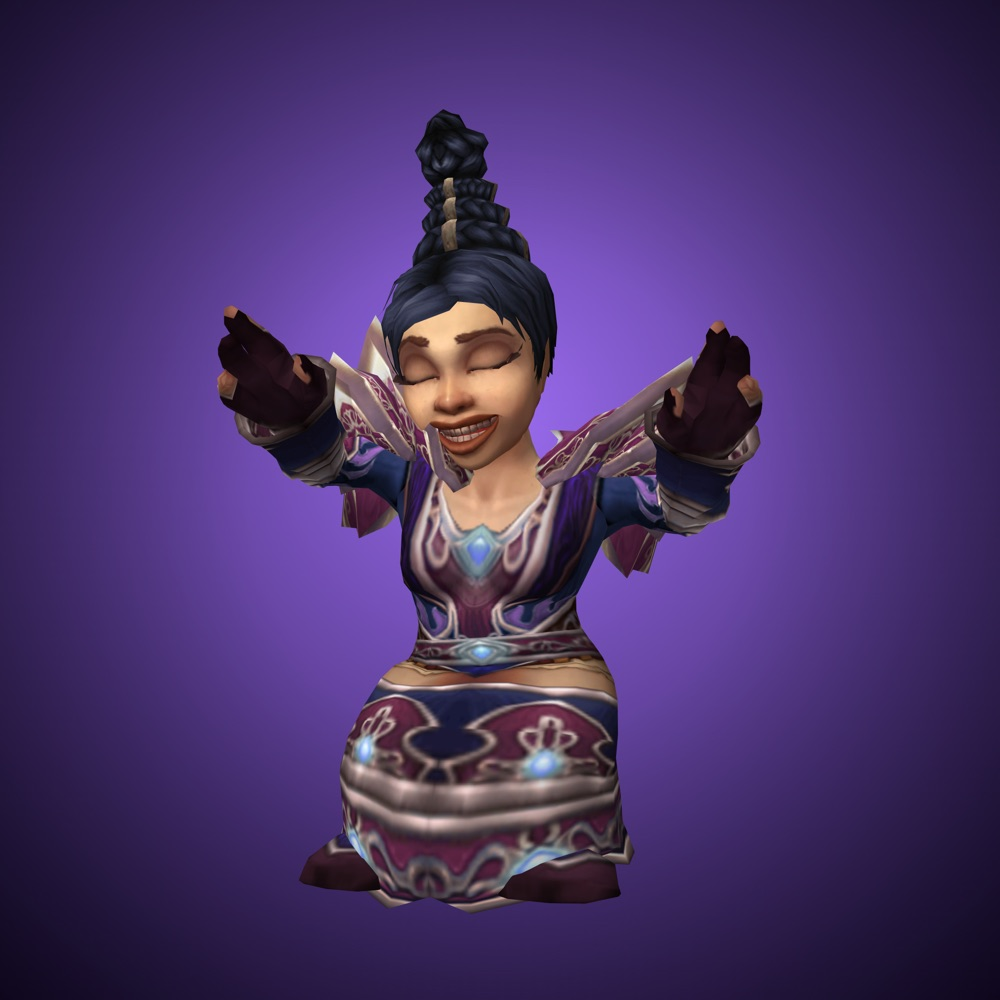
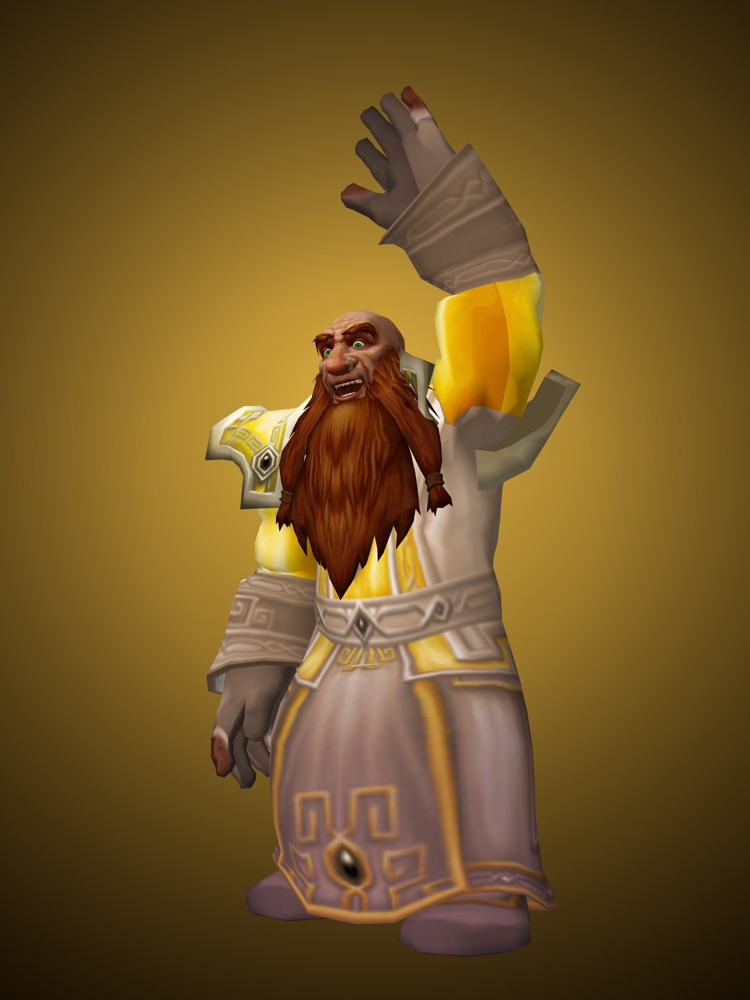
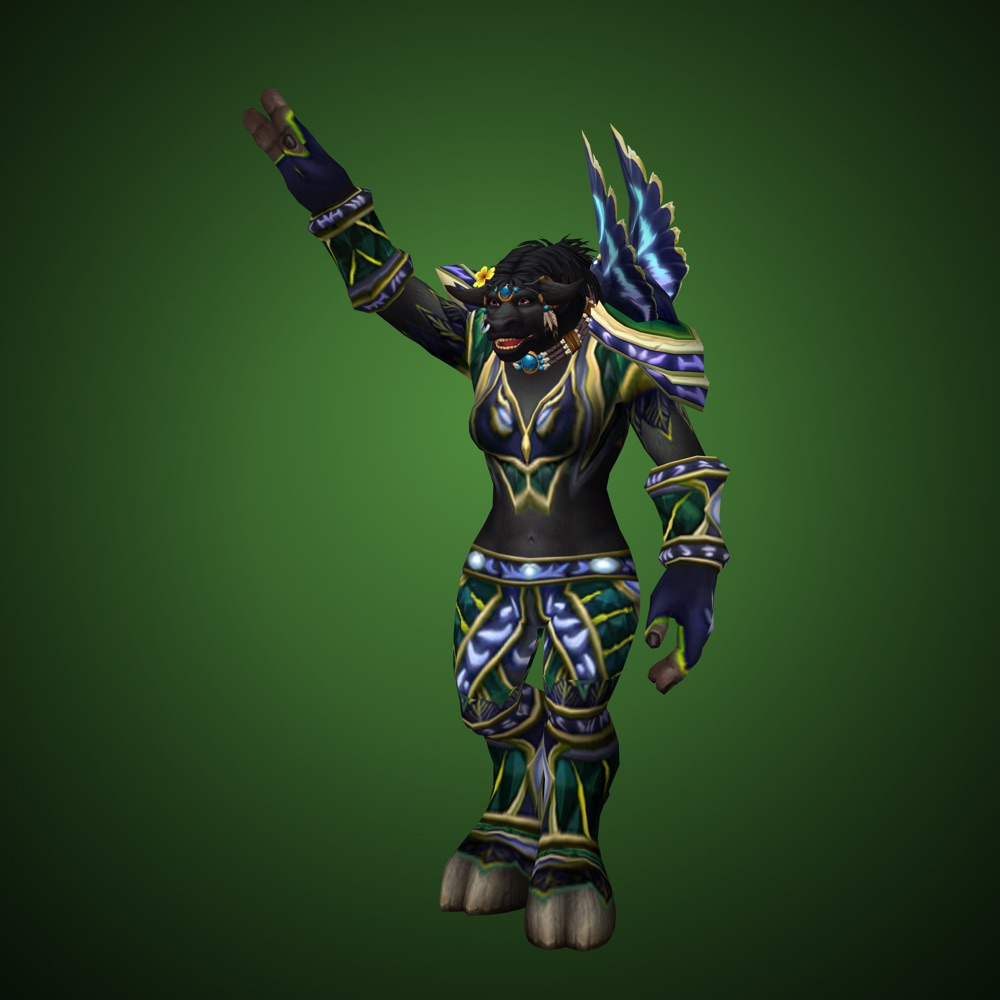
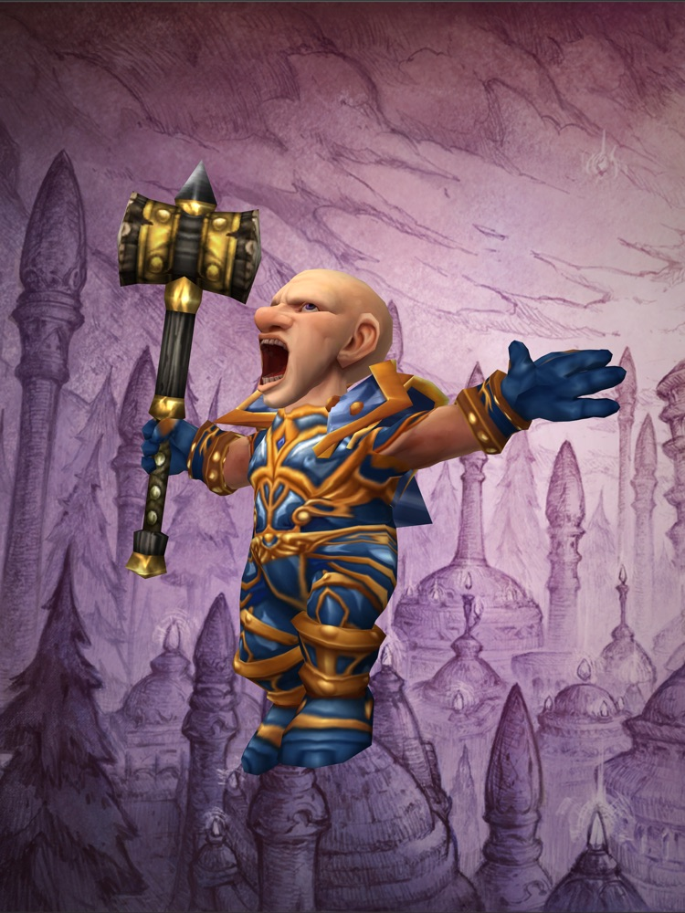

Then and now
One thing the 2004 guide said, set beside what World of Warcraft: Forever says. Each entry lists where both halves come from.
The guide was wrong Changed in Forever Still holds Testing in beta

The guide was wrongThe guide says orcs can't be warriorsOrc warriors are playable, as they were on the first day of the original game.
 Changed in ForeverHuman hunters, and five other combinations 2004 never offered
Changed in ForeverHuman hunters, and five other combinations 2004 never offeredHumans can be hunters too. It's one of six new race and class combinations.

Changed in ForeverThe undead find the LightThe undead can be paladins.

Changed in ForeverA mount cost 100 gold in 2004The cost moves into riding training, and learning to ride gives you a mount. No official price yet.

Still holdsGetting around: no flying, then or nowNo flying mounts. You cross the world on the ground.
 Testing in betaPets never stop eating
Testing in betaPets never stop eatingBlizzard hasn't said whether pet happiness returns. We're testing it in the beta.
 Testing in betaThree bags, feeding two
Testing in betaThree bags, feeding twoBlizzard hasn't said whether quivers and ammunition return.
 Changed in ForeverHunter, then and now
Changed in ForeverHunter, then and nowAimed Shot for every hunter at 20, traps usable in combat, pets that scale with your gear. The dead zone stays.

The guide was wrongBattlegrounds, as imagined in 2004The new battleground is Darkspear Islands, 15 against 15.
 Changed in ForeverSeventeen dungeons. That was the whole list.
Changed in ForeverSeventeen dungeons. That was the whole list.Nine new dungeons. Hall of Thanes and Ruins of Lordaeron are already open in the beta.

Changed in Forever"That's a secret ;)"The first raids open December 9: Barrow Deeps for 10 players and Hyjal Summit for 20.

Still holds#13: murlocs are evilTwenty-two years on, we can't fault a single one.

Still holdsFive tips from 2004 that still workStill the advice we'd give a new player.

Still holdsDon't call the tauren cowsHaving read general chat in the beta, we'd like all three back.

Still holdsThe glossary saw the acronyms comingLearn a handful and a busy chat channel starts to make sense.